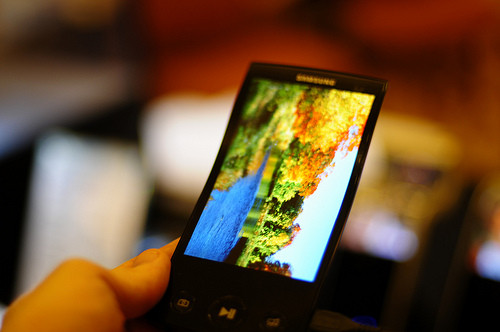

Technology is the study of techniques for manipulating the physical world in some useful way. That entails the design of tools, machines, devices, and construction projects. Science is the systematic study of observable phenomena in general. That entails hypotheses, theories, and experiments with a goal of prediction and an emphasis on generality and quantitative formulations. How you apply that knowledge toward performing useful tasks is irrelevant to science itself, but clearly science is of great utility to technology.
How did technology start?
Technology started from accidental discoveries that some things were useful. For example, the wheel evolved from the discovery that round logs would facilitate moving heavy things.
Fire probably started by accident ( perhaps from lightning ) and was found to confer both warmth and light. That led to various technologies: of starting fires ( flints and tinder ), maintaining fires ( stacking different materials ), using fire to transform other things such as burning a sharpened wood stick in a fire made it harder ( the resins solidified ). This led to the discovery that a sharpened and hardened stick could be used in war and in agriculture to scratch the ground. Fire probably led to the accidental discovery of cooking, that dangerous or inedible things became palatable, which became a whole technology itself. The accidental melting of natural substances led to metallurgy and the use of metals, first copper, then bronze and then iron.
Where is technology going?
 There was once a time when the idea of a full 64 bit 480p touch screen monitor being as thin as a piece of paper was considered science fiction. But then again, most things we own and take for granted everyday were once the subject of fantasy. Whether you're using a home kitchen appliance, or an android-based Samsung phone, it's pretty incredible to think how far humanity has pushed the limits of what can be done with electricity, metal and silicon. In fact, it's amazing that the laws of physics are made to allow for such gadgets to exist in the first place.
What is the future world going to look like in terms of technology?
First I think technology is going to continue on its path of being smaller, faster, cheaper, and less visible in our everyday world. I also think that the intersection of computing and telecommunications, which we now see as the Internet, will bring about a fundamental shift in perception of distance, just as it will change our perception of time. Wearable computing is about to enter the new world of work. The traditional interface that has existed between humans and technology is disappearing very rapidly. We first saw wearable computing in the form of space suits won by astronauts. These suits connected astronauts to their spacecraft, to their communications links, and finally, to the planet Earth. Wearable computers briefly appeared within the virtual-reality context of the late 1980s. It's becoming much more serious now, and there are even international symposiums on wearable computers. Remote sensing, data collection systems, military applications, cameras, and adjuncts to sensing abilities are among the major new applications in this field. As it becomes possible to directly link human sensing systems such as eyes and ears into computing platforms, this trend will grow even faster. Other functions such as embedded defibrillators and computer-enhanced neural communication patterns are probably within three to five years of being a reality. Many exciting potential applications exist that could help us harness the power of technology and do away with a physical separation between humans and technology. In the long term, I believe that the interface between technology and human biology will become so blurred that it will be difficult to separate a discussion of technology impacts from human evolution.